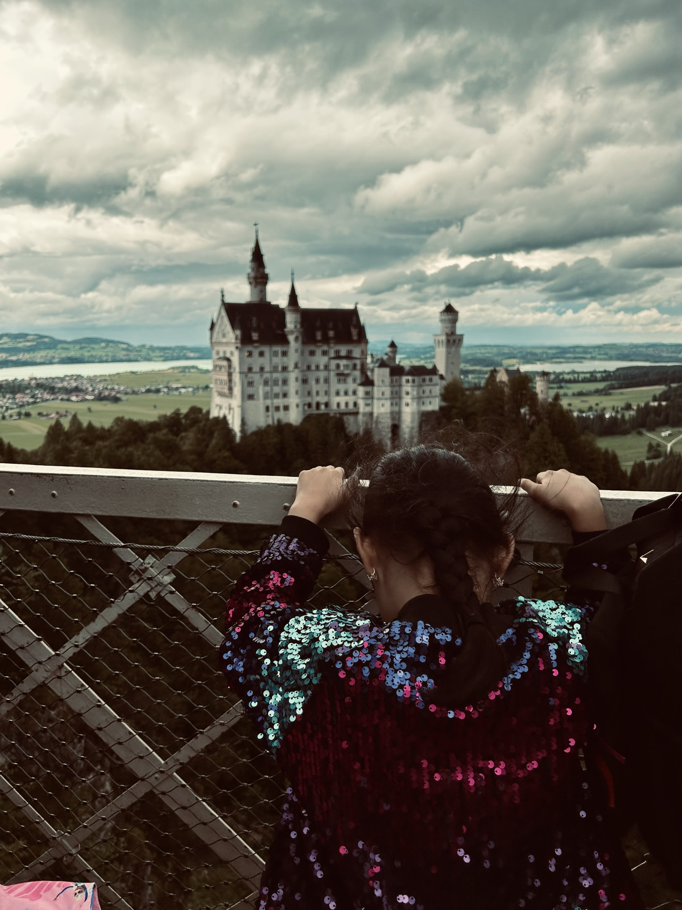
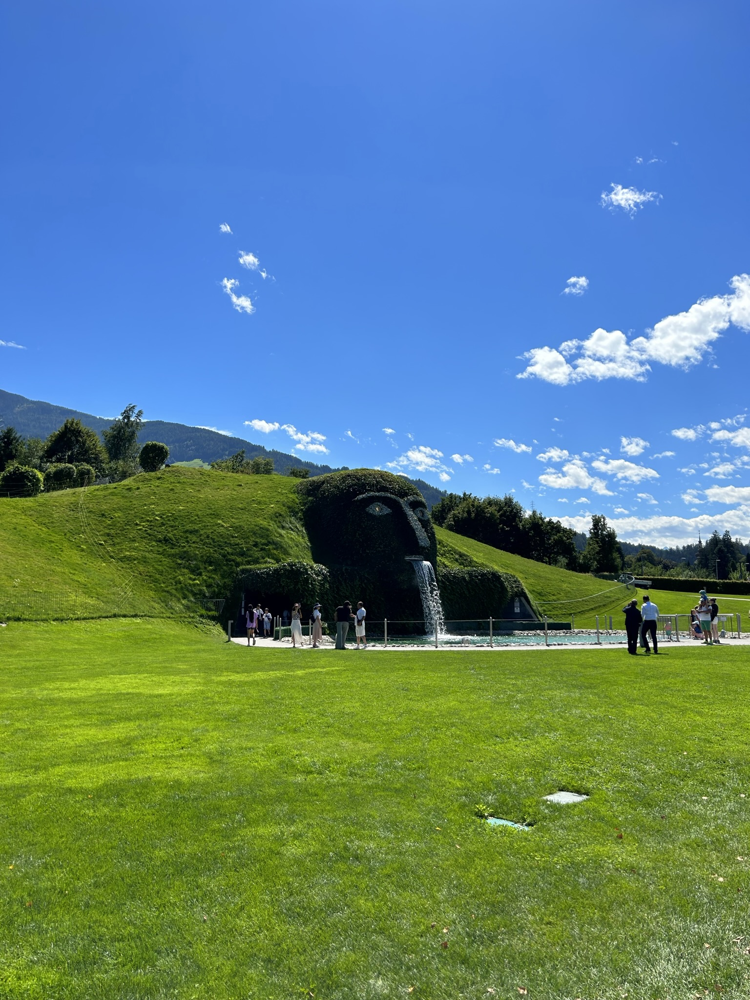
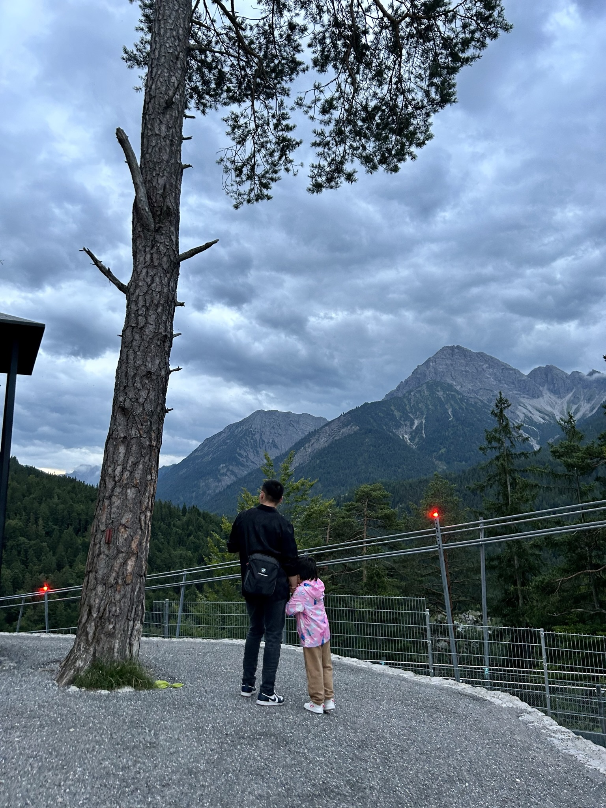
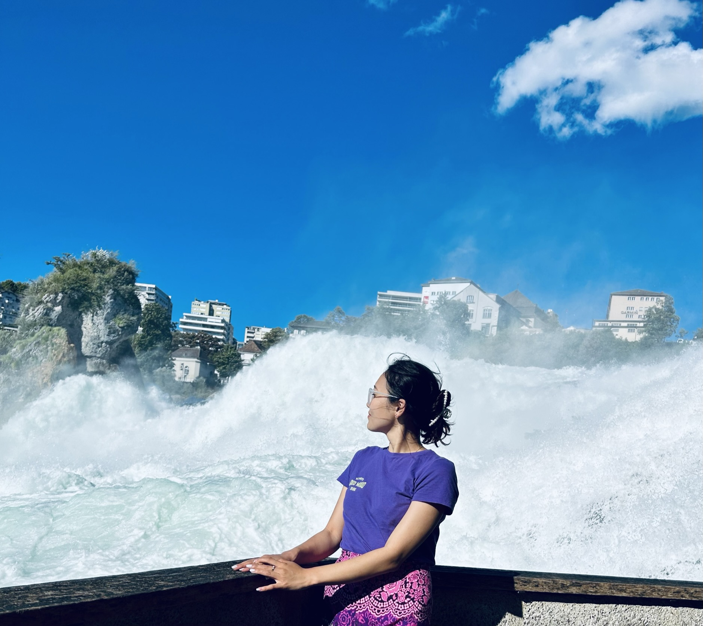
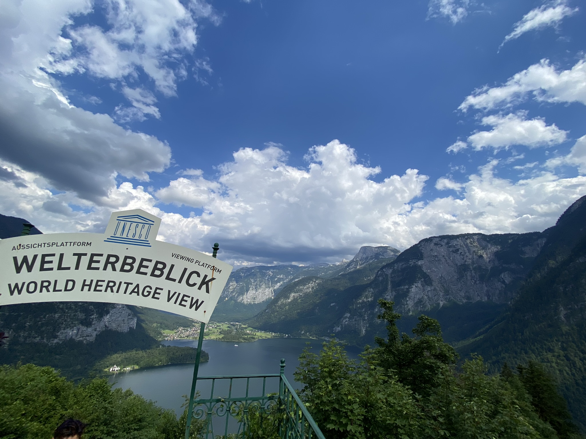
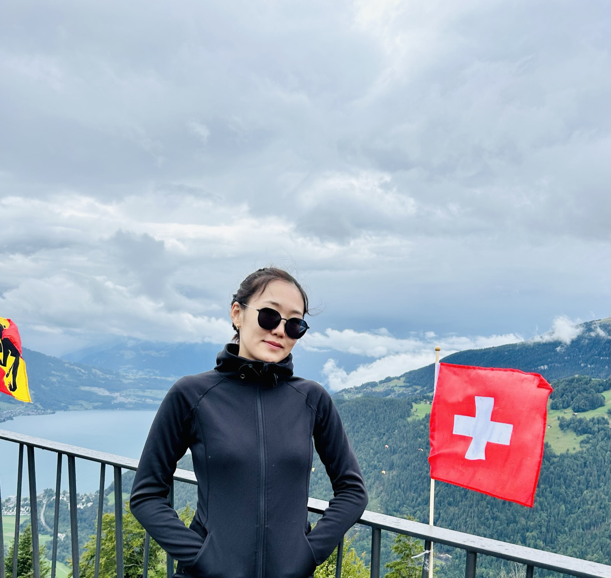
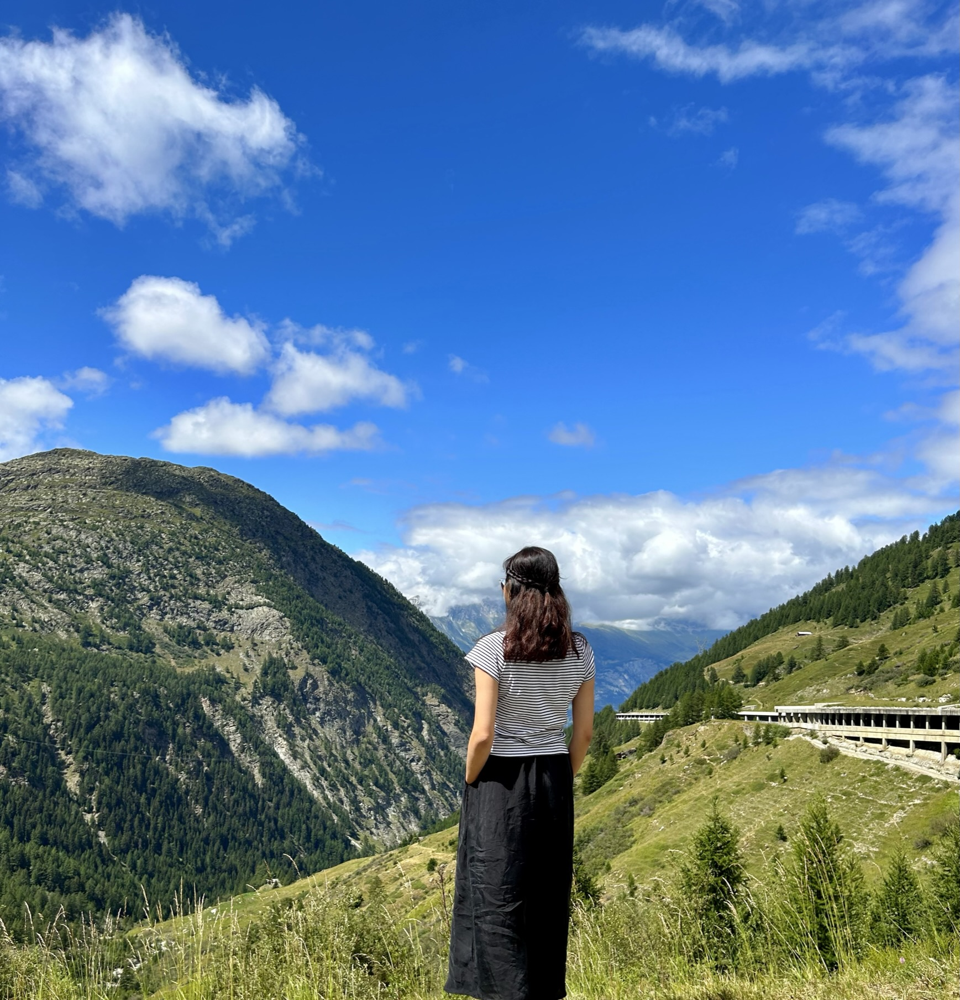
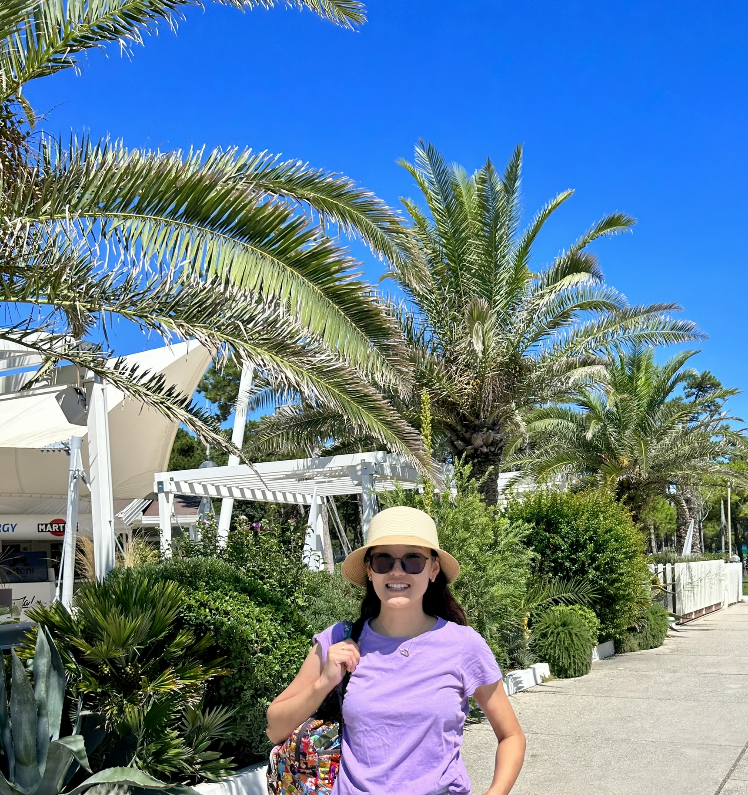
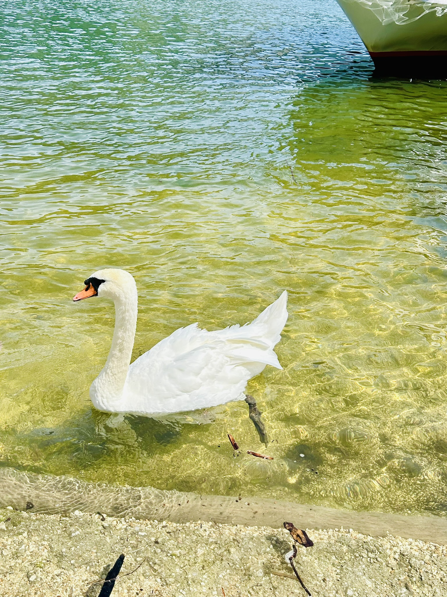

Аялах гэдэг нь зөвхөн шинэ газар орон үзэхэд биш, таны сэтгэл зүрх, оюун санаа шинэ туршлагууд, соёл, хүмүүстэй харилцаж, амьдралын утга учрыг шинэчлэн олж мэдэх үйл явц юм. Аялах явцад бид өөрийгөө илүү сайн таньж, төгс төгөлдөр байдлаас холдож, бидний амьдралыг өнгөлөг, сонирхолтой болгодог зүйлсийг олж авдаг.
Бид зөвхөн газар орон хардаггүй, харин хүн бүрийн амьдралыг таньж, нээлттэй сэтгэлтэй болдог.






Аялах нь дэлхийтэй холбогдох хамгийн сайхан арга бөгөөд таны сэтгэл, оюун санаа хоёрт шинэ хязгааргүй ертөнцийг нээж өгдөг.

Сэтгэл зүрхээ дагасан аялал нь зөвхөн газар орон үзэх бус, таны амьдралын хамгийн үнэ цэнэтэй туршлага болох болно.


Дэлхийн хамгийн сайхан, сэтгэл догдлуулсан газар нутгуудыг хайж олцгооё!